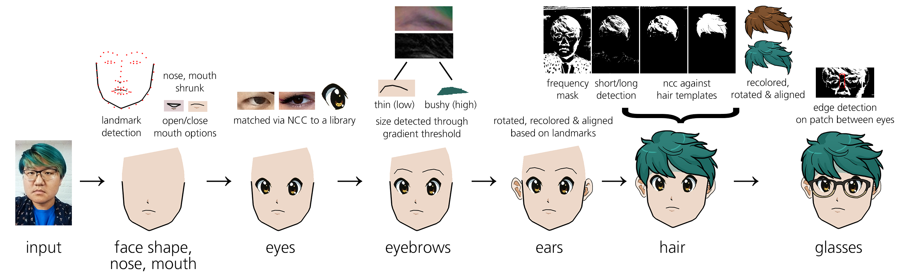

Jingyi
Li

AniME (stress on the "me") is a Python pipeline which, given a user input photo, automatically generates a corresponding stylized anime portrait. I worked on it with my friend Michelle Nguyen as our final project for a computational photography course. You can check out the full paper in its we-wrote-this-in-12-hours glory here, or read the abstract/check out the summarizing pipeline figure below. We're actively working to get up as a web app, so check back soon—we just need to pay for some server storage...

Abstract
The popularity of anime (Japanese animated productions) has transcended cultural boundaries, resulting in high volumes of fan works such as personalized avatars. However, drawing aesthetically pleasing anime is a craft that takes a long time to develop. AniME (pronounced ani-mee) is a pipeline which integrates computer vision, computational photography, and data-driven frameworks to automatically generate an anime-style portrait from a user given photo. Our approach renders the corresponding lineart using landmark facial annotations, while features such as eye shape and hairstyle are obtained via template matching to a hand-drawn library of anime eyes and hairstyles. Finally, colors of the anime portraiture are determined through simple averaging and clustering of selected image patches. We validate our tool using photos of people of varying genders, ethnicity, and hair styles.